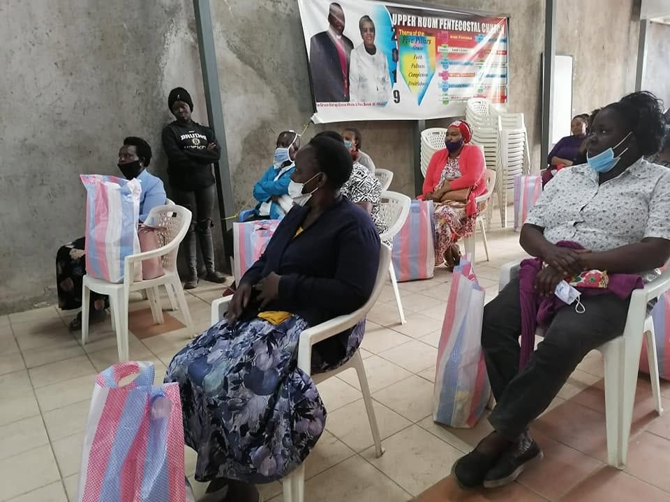
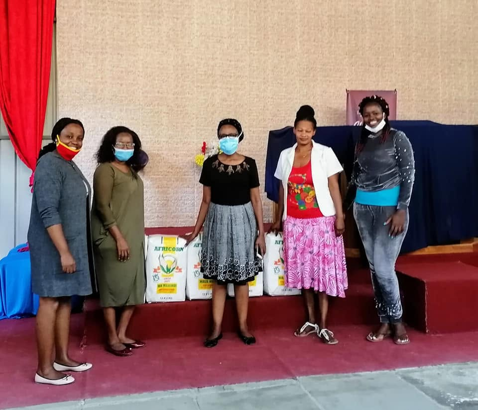
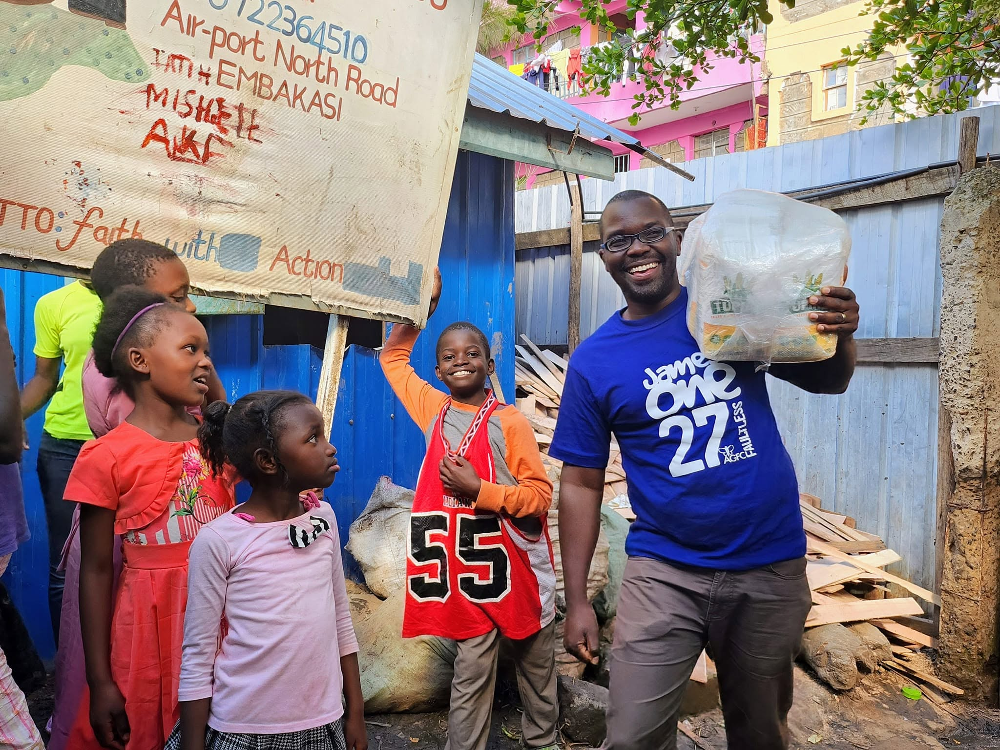
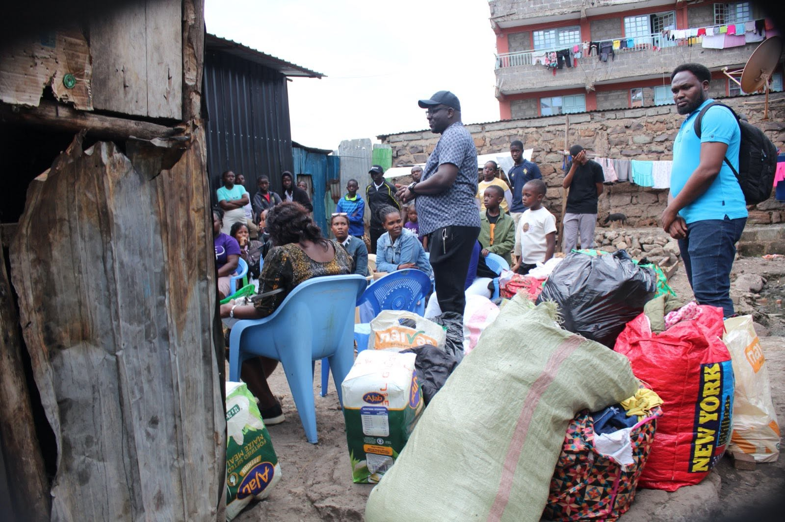

July
Mobilization of the beneficiaries into discussion groups
Reaching people, supporting communities and responding to practical needs with faith, hope and love.

Amazing Grace Family Care Foundation reaches out to vulnerable and less privileged people within society.
Through practical care and community outreach, AGFC seeks to respond to material needs while bringing faith, hope and love to the people it reaches.
Our outreach is about seeing a need, showing compassion and taking practical steps to make a difference.
We believe that care becomes meaningful when faith and compassion are translated into practical action.

Mobilization of the beneficiaries into discussion groups
Development of Information, Education and communication materials (IEC) materials discussion groups

Conduct one TOT discussion groups
Amazing Grace Family Care Foundation has shared outreach activities involving children's homes within Mradi Embakasi.
One of the foundation's shared outreach activities was a visit to Faith in Action Children's Home in Mradi Embakasi.
The outreach reflects AGFC's commitment to extending care beyond its immediate circle and supporting children and institutions within the community.
Connect With AGFC →
Conduct Open area community meetings on the Post covid-19 prevention measures discussion groups
Conduct one market assessment to form a basis for viability/profitability analysis discussion groups

Identification of the vulnerable households (direct and indirect beneficiaries of this project. discussion groups)

Actual distribution of food items to the beneficiaries in various locations

Distribution of hygiene kits